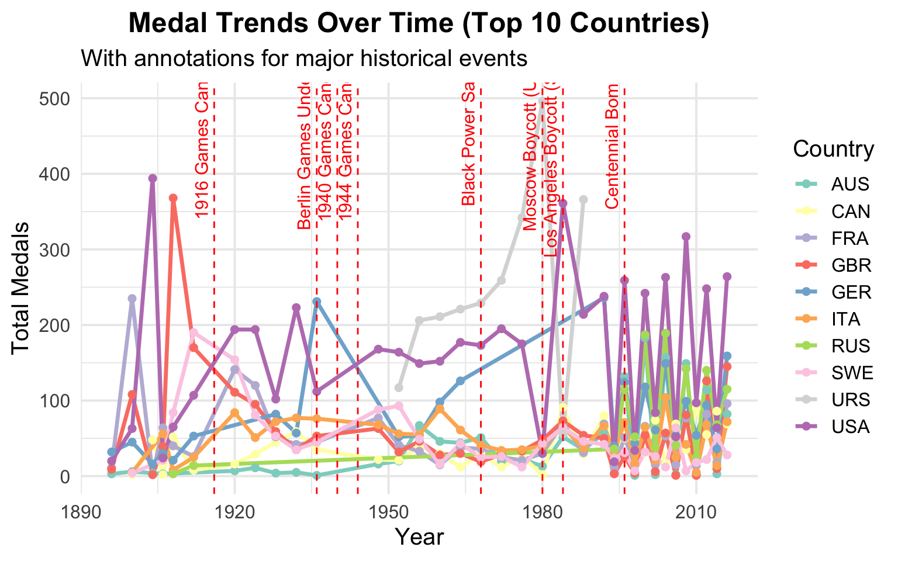
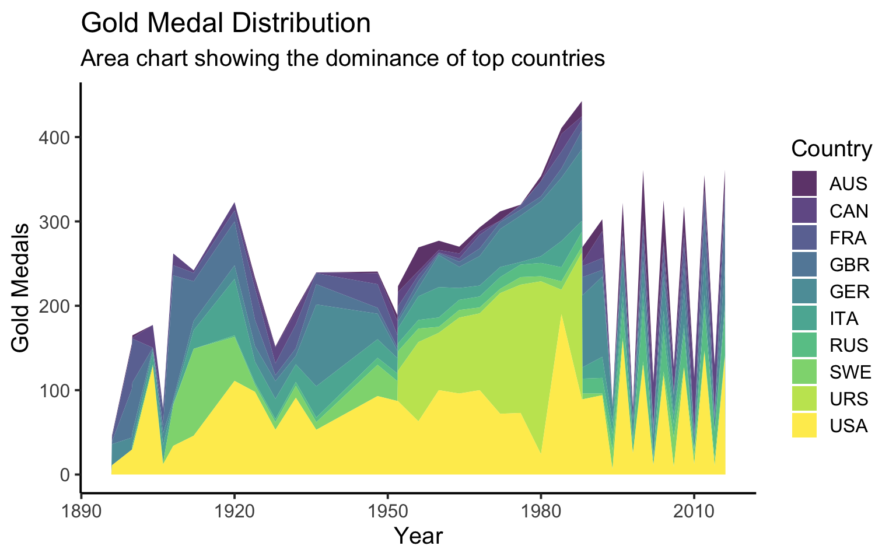

if (!require("pacman")) install.packages("pacman")Loading required package: pacmanpacman::p_load(tidyverse, ggridges, ggthemes, ggplot2, patchwork, gganimate, gifski, lubridate)
olympics <- read.csv("data/athlete_events.csv")if (!require("pacman")) install.packages("pacman")Loading required package: pacmanpacman::p_load(tidyverse, ggridges, ggthemes, ggplot2, patchwork, gganimate, gifski, lubridate)
olympics <- read.csv("data/athlete_events.csv")# filtering medal for analysis
medal_data <- olympics %>%
filter(!is.na(Medal)) %>%
group_by(Year, NOC, Medal) %>%
summarize(Count = n(), .groups = "drop") %>%
pivot_wider(names_from = Medal, values_from = Count, values_fill = 0) %>%
mutate(Total = Gold + Silver + Bronze)
# getting top 10 countries by medal
top_countries <- medal_data %>%
group_by(NOC) %>%
summarize(Total = sum(Total), .groups = "drop") %>%
arrange(desc(Total)) %>%
slice(1:10) %>%
pull(NOC)
top_country_data <- medal_data %>%
filter(NOC %in% top_countries)
# adding major events while olympics
world_events <- data.frame(
Year = c(1916, 1936, 1940, 1944, 1968, 1980, 1984, 1996),
Event = c(
"1916 Games Canceled (WWI)",
"Berlin Games Under Nazi (1936)",
"1940 Games Canceled (WWII)",
"1944 Games Canceled (WWII)",
"Black Power Salute (1968)",
"Moscow Boycott (U.S led) (1980)",
"Los Angeles Boycott (Soviet led) (1984)",
"Centennial Bombing (1996)"
)
)#| label: medal trends with histrorical events
#| warning: False
p1 <- ggplot(top_country_data, aes(x = Year, y = Total, color = NOC, group = NOC)) +
geom_line(size = 1.2) +
geom_point(size = 2) +
geom_vline(data = world_events, aes(xintercept = Year), linetype = "dashed", color = "red") +
geom_text(data = world_events, aes(x = Year, y = max(top_country_data$Total), label = Event),
angle = 90, vjust = -0.5, color = "red", size = 4, inherit.aes = FALSE) +
scale_color_brewer(palette = "Set3") +
theme_minimal(base_size = 15) +
labs(
title = "Medal Trends Over Time (Top 10 Countries)",
subtitle = "With annotations for major historical events",
x = "Year",
y = "Total Medals",
color = "Country"
) +
theme(plot.title = element_text(face = "bold", hjust = 0.5))Warning: Using `size` aesthetic for lines was deprecated in ggplot2 3.4.0.
ℹ Please use `linewidth` instead.p1
#| label: gold medal distribution
#| warning: False
p2 <- ggplot(top_country_data, aes(x = Year, y = Gold, fill = NOC)) +
geom_area(position = "stack", alpha = 0.8) +
scale_fill_viridis_d() +
scale_color_brewer(palette = "Set3") +
theme_classic(base_size = 15) +
labs(
title = "Gold Medal Distribution",
subtitle = "Area chart showing the dominance of top countries",
x = "Year",
y = "Gold Medals",
fill = "Country"
)
p2
# Create a medal count data frame by Team and Medal
medal_counts_team <- olympics %>%
filter(!is.na(Medal)) %>%
group_by(Team, Medal) %>%
summarize(Count = length(Medal), .groups = "drop")
# Identify the top 10 teams by total medals
top_teams <- medal_counts_team %>%
group_by(Team) %>%
summarize(Total_Medals = sum(Count), .groups = "drop") %>%
arrange(desc(Total_Medals)) %>%
slice_head(n = 10) %>%
pull(Team)
# Filter the medal_counts_team to include only the top 10 teams
medal_counts_team_top10 <- medal_counts_team %>%
filter(Team %in% top_teams)
# Plot the top 10 teams only
ggplot(medal_counts_team_top10, aes(x = Team, y = Count, fill = Medal)) +
geom_col() +
coord_flip() +
labs(title = "Medal Counts by Top 10 Teams",
x = "Team",
y = "Medal Count") +
theme_minimal()